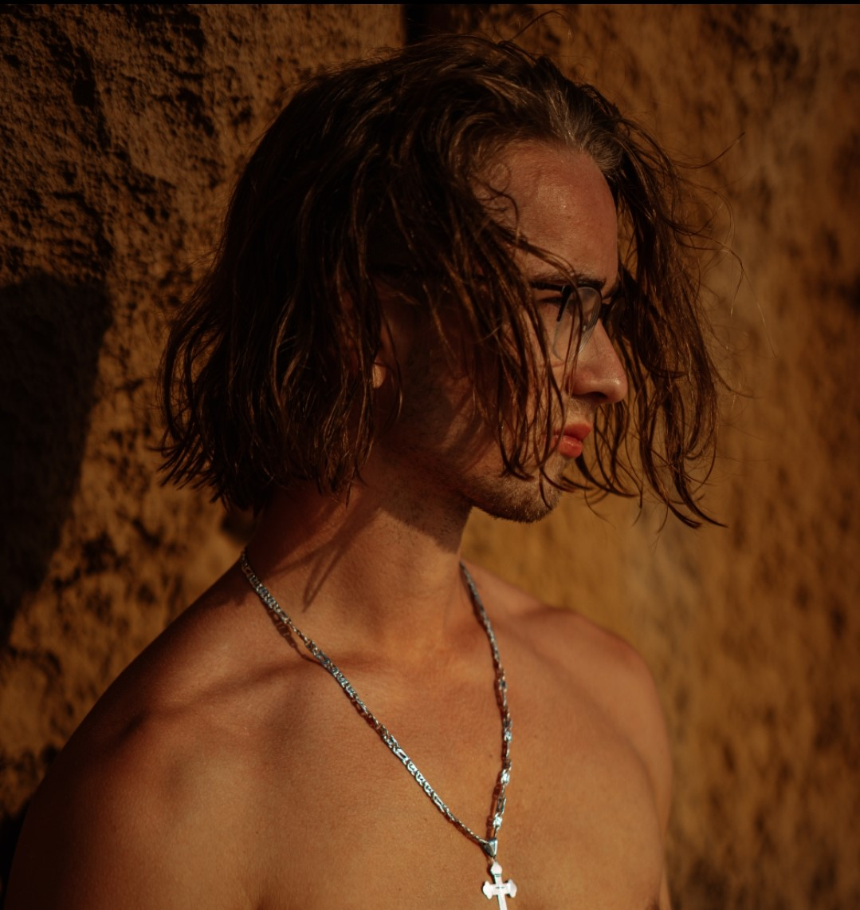
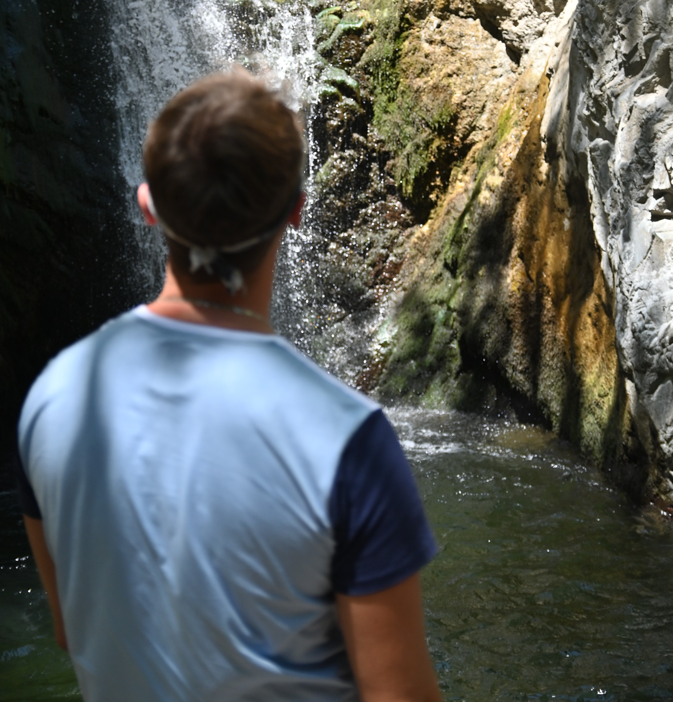

Hello everyone! Welcome to my first real website, my name is Stojan pejic and I am very passionate about media. I am an amateur photographer and an amateur video editor, both photography and video are my passions. To get to know me more, I am an individual who seeks adventure and love the feeling of high adrenaline moment in life, I try to take my camera with me wherever I go so that I can capture the moment in my life that will forever be stored as memories in my head.

In order for me to fully express myself, I try to use media production as a tool to stand out from others, I believe that in creativity, there is always and individual that has had a story. With a camera by my side, I always feel the most happiness and joy (besides when I’m with my family of course) and when I am in this state, I seem to see the best in myself. I am inspired by many photographers and videographers like Jakob Mihailo, James Mathews and documentary producers like Vice